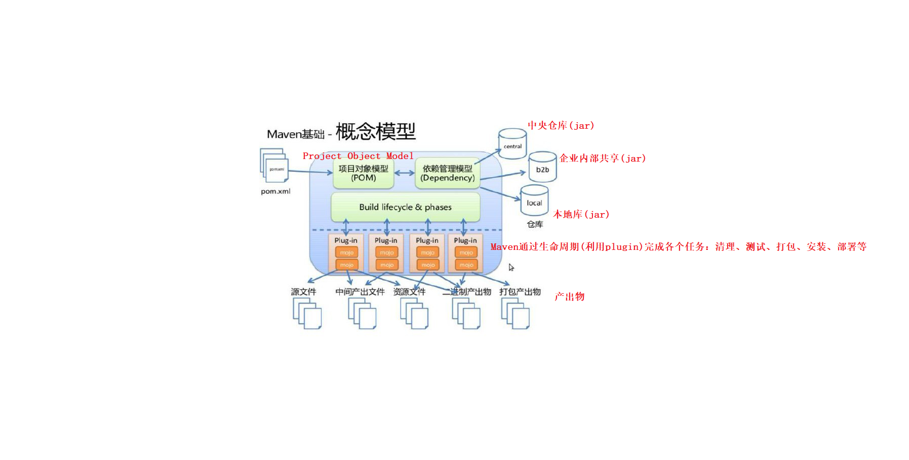
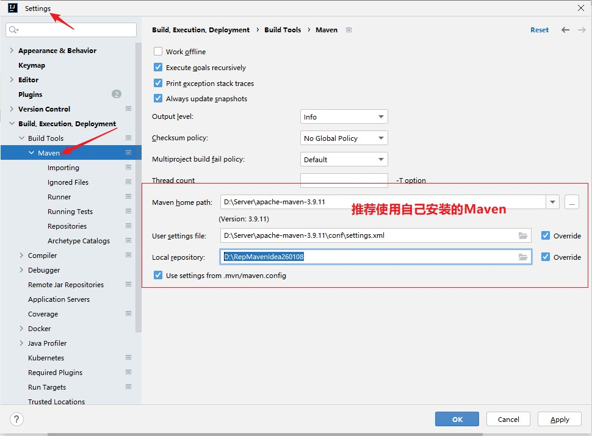
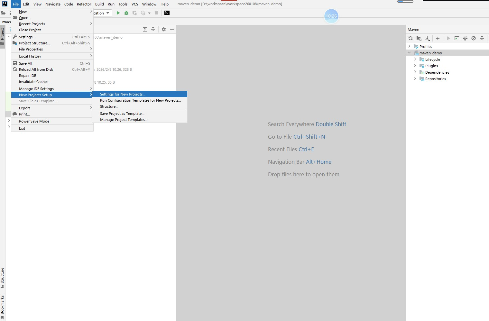
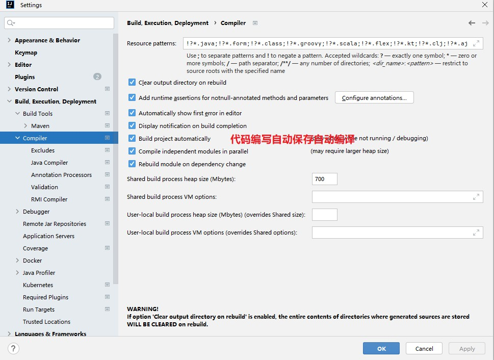
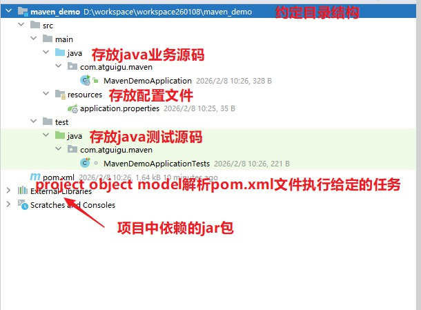
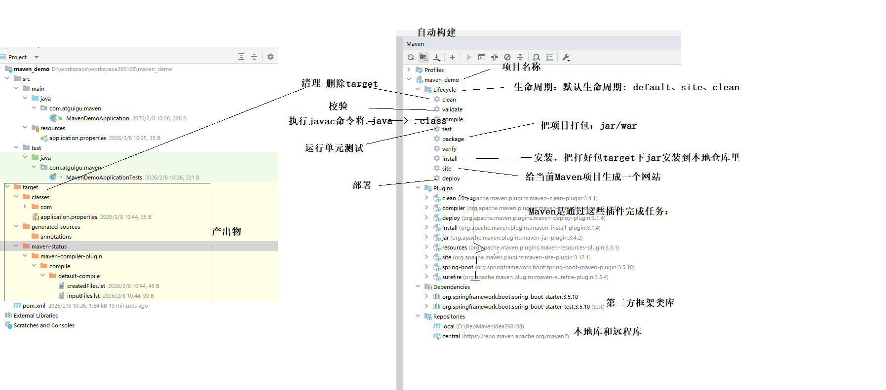
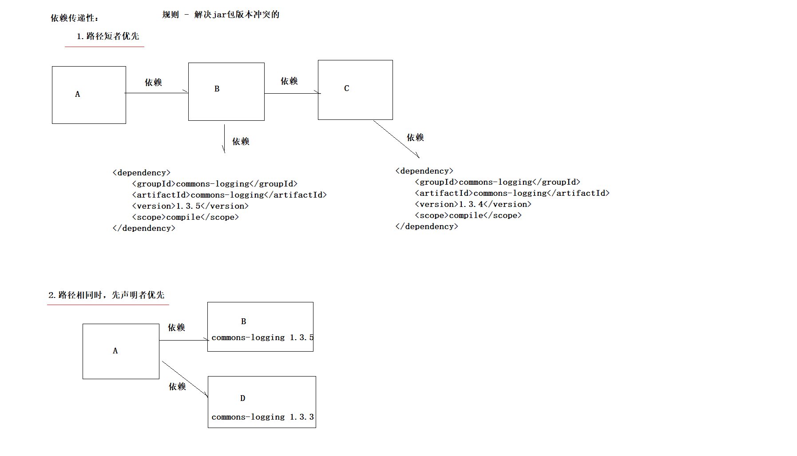

day01_Maven：Maven
由原始笔记整理生成，保留完整正文与本节截图。
课程资料







笔记正文
1.Maven是什么？作用？核心？
是什么？`Maven` 是一款为 Java 项目提供「构建」与「依赖管理」的工具（软件）。
作用？
自动构建
清理 -> 编译 -> 测试 -> 报告 -> 打包 -> 安装 -> 部署
依赖管理
以前需要下载导入很多jar包，会出现jar包之间冲突。
现在maven帮我们管理jar包。
好处：使用 Maven 可以自动化完成编译、测试、打包、发布等流程，从而提升开发效率与交付质量。
2.安装与配置
下载：https://maven.apache.org
安装：
D:\Server\apache-maven-3.9.11\conf\settings.xml
本地库： <localRepository>D:/RepMavenIdea260108</localRepository>
远程镜像仓库：
<mirror>
<id>alimaven</id>
<mirrorOf>central</mirrorOf>
<name>aliyun maven</name>
<url>http://maven.aliyun.com/nexus/content/groups/public</url>
</mirror>
JDK版本：
<profile>
<id>jdk-17</id>
<activation>
<activeByDefault>true</activeByDefault>
<jdk>17</jdk>
</activation>
<properties>
<maven.compiler.source>17</maven.compiler.source>
<maven.compiler.target>17</maven.compiler.target>
<maven.compiler.compilerVersion>17</maven.compiler.compilerVersion>
</properties>
</profile>
环境变量：
maven依赖JAVA_HOME环境变量。
JAVA_HOME=C:\Java\jdk-17.0.5
M2_HOME=D:\Server\apache-maven-3.9.11
PATH=%JAVA_HOME%\bin;%M2_HOME%\bin
mvn --version 查看版本
IDEA集成:
maven设置，参考截图
3.核心概念
packaging项目类型：
<!--Maven项目三种类型，默认jar [pom,jar,war]-->
<packaging>jar</packaging>
(1) POM模型: Project Object Model
对pom.xml解析解析，然后根据生命周期和相关插件执行任务。
(2) 坐标：GAV （GroupId AtifactId Version）
<!--坐标：每个项目都有的一个唯一标识
groupId：公司、部门、事业部
artifactId：项目会被拆成很多模块。模块化开发。
version：版本
-->
<groupId>com.atguigu</groupId>
<artifactId>maven_demo</artifactId>
<version>0.0.1-SNAPSHOT</version>
安装和查找：
自动生成仓库路径： com\atguigu\maven_demo\0.0.1-SNAPSHOT
规则：groupId\artifactId\version\artifactId-version.jar
案例1：
依赖于MySQL驱动，得通过坐标进行查找：https://mvnrepository.com/
<!-- Source: https://mvnrepository.com/artifact/mysql/mysql-connector-java -->
<dependency>
<groupId>mysql</groupId>
<artifactId>mysql-connector-java</artifactId>
<version>8.0.30</version>
<scope>compile</scope>
</dependency>
路径：mysql\mysql-connector-java\8.0.30\mysql-connector-java-8.0.30.jar
案例2：
<!-- Source: https://mvnrepository.com/artifact/org.projectlombok/lombok -->
<dependency>
<groupId>org.projectlombok</groupId>
<artifactId>lombok</artifactId>
<version>1.18.38</version>
<scope>compile</scope>
</dependency>
路径：org\projectlombok\lombok\1.18.38\lombok-1.18.38.jar
(3) 约定的目录结构
- `pom.xml`：Maven 项目管理文件，用于描述项目依赖与构建配置等信息
- `src/main/java`：项目 Java 源代码（标准 MVC 架构代码）
- `src/main/resources`：资源目录（配置文件、静态资源等）
- `src/test/java`：测试代码目录
- `src/test/resources`：测试资源目录（测试配置等）
(4) 依赖管理 (重点)
依赖范围：
<!--全局属性定义-->
<properties>
<java.version>17</java.version>
<mysql.version>8.0.30</mysql.version>
</properties>
<dependency>
<groupId></groupId>
<artifactId></artifactId>
<version></version>
<scope>compile</scope> 依赖范围：compile(默认，可以省略不配) provided test runtime
</dependency>
依赖范围：
- compile ：main 目录、test 目录、运行、打包 [默认]
- provided：main 目录、test 目录 Servlet 不需要参与打包部署，因为Tomcat已经提供了。
- runtime ：运行、打包 MySQL驱动
- test ：test 目录 JUnit 不给main代码使用，也不参与打包部署
<dependencies>
重点是坐标：https://mvnrepository.com/
1.依赖下载失败情况，如何解决？
依赖坐标下载资源不存在，那么会在仓库中存在很多的垃圾：.lastUpdated
要么手动一个一个删除；要么使用批处理命令删除：清理maven错误缓存.bat （使用时需要修改下仓库目录）
2.依赖传递性：
直接依赖
间接依赖
3.依赖冲突特性：
手动：
<dependency>
<groupId>com.atguigu</groupId>
<artifactId>B</artifactId>
<version>0.0.1</version>
<!--排除依赖-->
<exclusions>
<exclusion>
<groupId>commons-logging</groupId>
<artifactId>commons-logging</artifactId>
</exclusion>
</exclusions>
</dependency>
自动：
两个规则：
1.路径短者优先
2.路径相同时，先声明者优先
面试题：<dependencies>和<dependencyManagement>使用区别？
(5) 生命周期
- clean: 将target目录删除
- site: 生成项目说明网站
- default: 重点
清理 -> 编译 -> 测试 -> 报告 -> 打包 -> 安装 -> 部署
(6) 插件和目标
仓库\org\apache\maven\plugins\
maven-assembly-plugin
maven-clean-plugin 清理
maven-compiler-plugin 编译
maven-dependency-plugin
maven-deploy-plugin 部署
maven-enforcer-plugin
maven-failsafe-plugin
maven-help-plugin
maven-install-plugin 安装
maven-invoker-plugin
maven-jar-plugin 打包
maven-javadoc-plugin
maven-plugins
maven-project-info-reports-plugin
maven-release-plugin
maven-resources-plugin 资源
maven-shade-plugin
maven-site-plugin 生成网站
maven-source-plugin
maven-surefire-plugin
maven-war-plugin
(7) 继承
dependencies(只要声明就下载) : 父模块的dependencies里声明的依赖，子模块直接使用，无需任何声明。
dependencyManagement(只声明不下载,孩子模块用时才会下载) : 父模块dependencyManagement里声明的依赖，子模块需要声明后才能使用。
这两个标签声明依赖，都是父模块统计进行版本管理。
(8) 聚合
当前项目必须是pom类型
<!--聚合： 一键操作
例如：对父模块进行编译，所有被聚合模块都跟着编译。
-->
<modules>
<module>A</module>
<module>B</module>
<module>C</module>
<module>D</module>
<module>E</module><!--不是继承关系也能被聚合-->
</modules>
(9) 仓库
- 本地仓库：
设置：settings.xml
<localRepository>D:/RepMavenIdea260108</localRepository>
- 中央仓库：
https://mvnrepository.com/ 查找坐标网站
https://repo.maven.apache.org 下载网址
- 远程镜像仓库：国内 是中央仓库副本
<mirror>
<id>alimaven</id>
<mirrorOf>central</mirrorOf>
<name>aliyun maven</name>
<url>http://maven.aliyun.com/nexus/content/groups/public</url>
</mirror>
仓库里都有啥？大概分三类
org\apache\maven\plugins 放的都是Maven的插件
com\atguigu\ 存放自己项目打包后安装模块
剩余的，例如mysql\mysql-connector-java 都属于第三方框架或组件
共享项目时，无需共享本地库。
注意事项：
1.避免循环依赖
4.实战
5.面试题？
1) dependencies和dependencyManagement使用区别？
2) 如何解决依赖冲突问题？